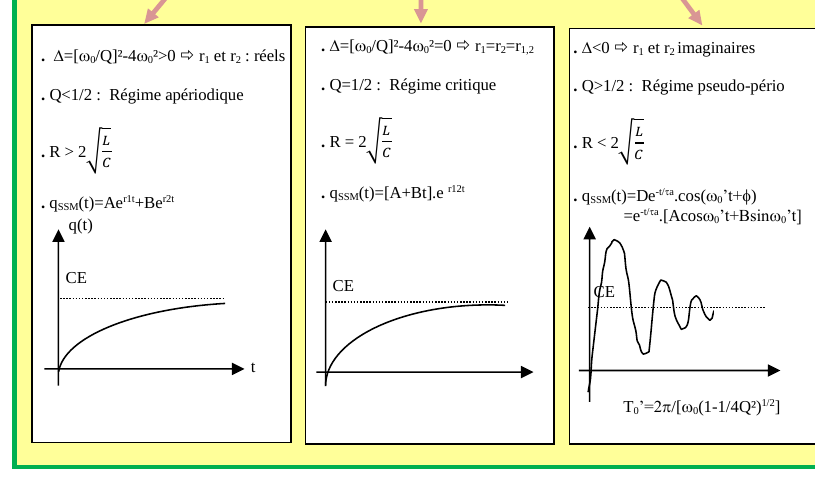
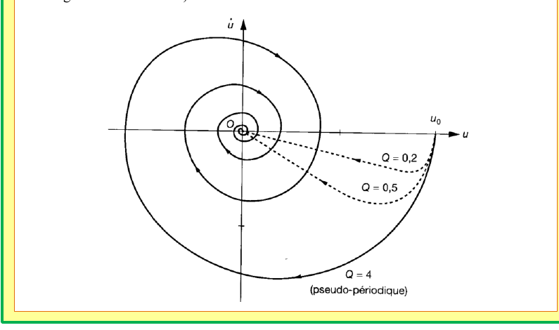
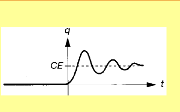
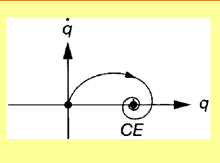

Électricité 3 — Les régimes transitoires (2)
1. Équation différentielle du second ordre
Soit l'équation différentielle $\ddot x + \dfrac{\omega_0}{Q}\dot x + \omega_0^2 x = 0$.
Théorème 1 — solutions selon $Q$
- $Q>\dfrac12$ : $x(t) = e^{-\frac{\omega_0}{2Q}t}\left(A\cos\!\big(\omega_0\sqrt{1-\tfrac{1}{4Q^2}}\,t\big) + B\sin\!\big(\omega_0\sqrt{1-\tfrac{1}{4Q^2}}\,t\big)\right)$
- $Q<\dfrac12$ : $x(t) = e^{-\frac{\omega_0}{2Q}t}\left(A\,e^{\omega_0\sqrt{\tfrac{1}{4Q^2}-1}\,t} + B\,e^{-\omega_0\sqrt{\tfrac{1}{4Q^2}-1}\,t}\right)$
- $Q=\dfrac12$ : $x(t) = (A+Bt)\,e^{-\frac{\omega_0}{2Q}t} = (A+Bt)\,e^{-\omega_0 t}$
2. Circuit RLC série
Théorème 2
$$\ddot q + \frac{\omega_0}{Q}\dot q + \omega_0^2 q = \frac{E}{L}, \qquad q(t) = q_{\text{part}}+q_{\text{ssm}}(t) = EC + q_{\text{ssm}}(t)$$
$$Q = \frac{L\omega_0}{R} = \frac{1}{RC\omega_0} = \frac{1}{R}\sqrt{\frac{L}{C}} \qquad \left(\omega_0 = \frac{1}{\sqrt{LC}}\right)$$
Équation caractéristique : $r^2 + \dfrac{\omega_0}{Q}r+\omega_0^2=0$, de discriminant $\Delta=\left(\dfrac{\omega_0}{Q}\right)^2-4\omega_0^2$.
| Discriminant | Condition sur $R$ | Régime | Solution $q_{\text{ssm}}(t)$ |
|---|---|---|---|
| $\Delta>0$ ($r_1,r_2$ réels) | $R>2\sqrt{L/C}$, $Q<1/2$ | Apériodique | $Ae^{r_1t}+Be^{r_2t}$ |
| $\Delta=0$ ($r_1=r_2$) | $R=2\sqrt{L/C}$, $Q=1/2$ | Critique | $(A+Bt)e^{r_{1,2}t}$ |
| $\Delta<0$ ($r_1,r_2$ complexes) | $R<2\sqrt{L/C}$, $Q>1/2$ | Pseudo-périodique | $e^{-t/\tau_a}(A\cos\omega_0't+B\sin\omega_0't)$ |
Remarque
Dans les trois cas, $q(t)$ tend vers la même valeur d'équilibre $CE$ (charge en régime permanent) ; seule la façon d'y parvenir change (montée directe pour les deux premiers régimes, oscillations amorties pour le troisième, de pseudo-période $T_0'=\dfrac{2\pi}{\omega_0\sqrt{1-1/(4Q^2)}}$).

3. Portrait de phase de l'oscillateur amorti en régime pseudo-périodique
Généralités
Le portrait de phase dessine le lien entre une grandeur et sa dérivée temporelle. Si ce lien est linéaire le portrait est une droite ; sinon non. Si la grandeur a une valeur asymptotique le portrait convergera vers ce point.
Cas d'un dispositif amorti pour plusieurs valeurs de $Q$ ($u$ est, par exemple, l'allongement d'un ressort) :

4. RLC soumis à un échelon (régime pseudo-périodique)
Théorème 3
Un circuit RLC série attaqué par un échelon $E$ vérifie $E=L\ddot q+R\dot q+\dfrac{q}{C}$, avec $q(0)=\dot q(0)=0$. En régime pseudo-périodique :
$$q(t) = e^{-\frac{\omega_0}{2Q}t}\left(A\cos(\omega_0't)+B\sin(\omega_0't)\right) + CE, \qquad \omega_0' = \omega_0\sqrt{1-\frac{1}{4Q^2}},\quad Q=\frac{L\omega_0}{R}$$
Vérification (cohérence des conditions initiales)
En $t=0$ : $q(0)=A+CE$. La condition $q(0)=0$ impose $A=-CE$, cohérent avec une charge nulle initiale évoluant vers l'asymptote $CE$ — le schéma de la Fig. 1 (régime pseudo-périodique) part bien de $q=0$ et oscille autour de $CE$.


Quiz de fin de chapitre
1. Quelle est l'hypothèse clé qui distingue les trois régimes de l'oscillateur amorti (apériodique, critique, pseudo-périodique) ?
Réponse
Le signe du discriminant $\Delta=(\omega_0/Q)^2-4\omega_0^2$ de l'équation caractéristique, équivalent à la comparaison de $Q$ à $1/2$ (ou de $R$ à $2\sqrt{L/C}$) : $\Delta>0$ (racines réelles, $Q<1/2$) donne l'apériodique, $\Delta=0$ le critique, $\Delta<0$ (racines complexes, $Q>1/2$) le pseudo-périodique (Théorème 2).
Le signe du discriminant $\Delta=(\omega_0/Q)^2-4\omega_0^2$ de l'équation caractéristique, équivalent à la comparaison de $Q$ à $1/2$ (ou de $R$ à $2\sqrt{L/C}$) : $\Delta>0$ (racines réelles, $Q<1/2$) donne l'apériodique, $\Delta=0$ le critique, $\Delta<0$ (racines complexes, $Q>1/2$) le pseudo-périodique (Théorème 2).
2. Que représente physiquement le facteur de qualité $Q$ dans un circuit RLC série ?
Réponse
$Q=\frac{1}{R}\sqrt{L/C}$ (Théorème 2) mesure l'importance relative de l'amortissement (dû à $R$) par rapport aux effets réactifs ($L,C$) : plus $R$ est petit (ou $L,C$ grands), plus $Q$ est grand, et plus le régime devient oscillant (pseudo-périodique) avec de nombreuses oscillations avant stabilisation.
$Q=\frac{1}{R}\sqrt{L/C}$ (Théorème 2) mesure l'importance relative de l'amortissement (dû à $R$) par rapport aux effets réactifs ($L,C$) : plus $R$ est petit (ou $L,C$ grands), plus $Q$ est grand, et plus le régime devient oscillant (pseudo-périodique) avec de nombreuses oscillations avant stabilisation.
3. Un RLC série a $L=1\,\text{H}$, $C=1\,\mu\text{F}$, $R=2000\,\Omega$. Calculer $\omega_0$ et $Q$, et identifier le régime.
Réponse
$\omega_0=1/\sqrt{LC}=1/\sqrt{10^{-6}}=1000\,\text{rad/s}$. $Q=\frac1R\sqrt{L/C}=\frac{1}{2000}\sqrt{10^6}=\frac{1000}{2000}=0{,}5$. $Q=1/2$ : régime critique (Théorème 2).
$\omega_0=1/\sqrt{LC}=1/\sqrt{10^{-6}}=1000\,\text{rad/s}$. $Q=\frac1R\sqrt{L/C}=\frac{1}{2000}\sqrt{10^6}=\frac{1000}{2000}=0{,}5$. $Q=1/2$ : régime critique (Théorème 2).
4. Calculer la pseudo-période $T_0'$ pour $\omega_0=1000\,\text{rad/s}$ et $Q=2$.
Réponse
$T_0'=\dfrac{2\pi}{\omega_0\sqrt{1-1/(4Q^2)}}=\dfrac{2\pi}{1000\sqrt{1-1/16}}=\dfrac{2\pi}{1000\times0{,}968}\approx6{,}49\,\text{ms}$.
$T_0'=\dfrac{2\pi}{\omega_0\sqrt{1-1/(4Q^2)}}=\dfrac{2\pi}{1000\sqrt{1-1/16}}=\dfrac{2\pi}{1000\times0{,}968}\approx6{,}49\,\text{ms}$.
5. Pourquoi les trois régimes (Fig. 1) convergent-ils tous vers la même valeur asymptotique $q=CE$, quel que soit $Q$ ?
Réponse
Parce que la solution particulière $q_{\text{part}}=CE$ (Théorème 2) ne dépend que de l'équation en régime permanent ($\ddot q=\dot q=0 \Rightarrow \omega_0^2 q=E/L \Rightarrow q=E/(L\omega_0^2)=EC$ puisque $\omega_0^2=1/(LC)$), indépendamment de $Q$ : seule la partie homogène $q_{\text{ssm}}(t)$, qui s'annule aux temps longs, dépend du régime (donc de $Q$).
Parce que la solution particulière $q_{\text{part}}=CE$ (Théorème 2) ne dépend que de l'équation en régime permanent ($\ddot q=\dot q=0 \Rightarrow \omega_0^2 q=E/L \Rightarrow q=E/(L\omega_0^2)=EC$ puisque $\omega_0^2=1/(LC)$), indépendamment de $Q$ : seule la partie homogène $q_{\text{ssm}}(t)$, qui s'annule aux temps longs, dépend du régime (donc de $Q$).
6. Que se passerait-il si $R=0$ dans un circuit RLC série (portrait de phase, Fig. 2) ?
Réponse
$Q\to\infty$ : le régime resterait pseudo-périodique mais sans aucun amortissement — le portrait de phase deviendrait un cercle (ou une ellipse) fermé parcouru indéfiniment, au lieu d'une spirale convergente, car l'énergie ne serait plus dissipée par une résistance nulle (oscillateur harmonique non amorti).
$Q\to\infty$ : le régime resterait pseudo-périodique mais sans aucun amortissement — le portrait de phase deviendrait un cercle (ou une ellipse) fermé parcouru indéfiniment, au lieu d'une spirale convergente, car l'énergie ne serait plus dissipée par une résistance nulle (oscillateur harmonique non amorti).
7. Piège classique : peut-on dire que le régime critique ($Q=1/2$) est un cas particulier de l'apériodique, ou un cas particulier du pseudo-périodique ?
Réponse
Ni l'un ni l'autre au sens strict : c'est un cas limite, à la frontière, caractérisé par une racine double $r_{1,2}$ (ni deux racines réelles distinctes comme l'apériodique, ni deux racines complexes comme le pseudo-périodique). Sa solution $(A+Bt)e^{r_{1,2}t}$ (Théorème 1, cas $Q=1/2$) a une forme algébrique différente des deux autres régimes, bien que sa courbe $q(t)$ ressemble visuellement à l'apériodique (Fig. 1) — piège classique de confondre « ressemblance graphique » et « identité mathématique ».
Ni l'un ni l'autre au sens strict : c'est un cas limite, à la frontière, caractérisé par une racine double $r_{1,2}$ (ni deux racines réelles distinctes comme l'apériodique, ni deux racines complexes comme le pseudo-périodique). Sa solution $(A+Bt)e^{r_{1,2}t}$ (Théorème 1, cas $Q=1/2$) a une forme algébrique différente des deux autres régimes, bien que sa courbe $q(t)$ ressemble visuellement à l'apériodique (Fig. 1) — piège classique de confondre « ressemblance graphique » et « identité mathématique ».
8. Piège classique : dans le portrait de phase (Fig. 2), pourquoi la spirale tourne-t-elle et ne converge-t-elle pas en ligne droite comme dans le cas du premier ordre (chapitre précédent) ?
Réponse
Parce qu'ici on trace $\dot u$ en fonction de $u$ pour une équation du second ordre : la relation entre $u$ et $\dot u$ n'est plus directement donnée par l'équation différentielle elle-même (qui relie $\ddot u$, $\dot u$ et $u$), contrairement au premier ordre où $\dot x=f(x)$ est directement une droite. Le régime pseudo-périodique, oscillant, produit naturellement une trajectoire en spirale dans le plan $(u,\dot u)$.
Parce qu'ici on trace $\dot u$ en fonction de $u$ pour une équation du second ordre : la relation entre $u$ et $\dot u$ n'est plus directement donnée par l'équation différentielle elle-même (qui relie $\ddot u$, $\dot u$ et $u$), contrairement au premier ordre où $\dot x=f(x)$ est directement une droite. Le régime pseudo-périodique, oscillant, produit naturellement une trajectoire en spirale dans le plan $(u,\dot u)$.
9. Synthèse : reliez la continuité de $q$ et $i=\dot q$ (chapitre précédent, Propriété 1) aux conditions initiales $q(0)=\dot q(0)=0$ utilisées au Théorème 3 pour le RLC soumis à un échelon.
Réponse
La continuité de la charge $q$ (toujours valable, condensateur) et celle du courant $i=\dot q$ (toujours valable, à travers la bobine du même circuit série) justifient physiquement que si le condensateur est initialement déchargé et aucun courant ne circule avant $t=0$, alors $q(0^+)=q(0^-)=0$ et $\dot q(0^+)=i(0^+)=i(0^-)=0$ : les deux conditions initiales du Théorème 3 sont directement une conséquence de ces deux continuités appliquées à l'instant de fermeture du circuit.
La continuité de la charge $q$ (toujours valable, condensateur) et celle du courant $i=\dot q$ (toujours valable, à travers la bobine du même circuit série) justifient physiquement que si le condensateur est initialement déchargé et aucun courant ne circule avant $t=0$, alors $q(0^+)=q(0^-)=0$ et $\dot q(0^+)=i(0^+)=i(0^-)=0$ : les deux conditions initiales du Théorème 3 sont directement une conséquence de ces deux continuités appliquées à l'instant de fermeture du circuit.
10. Synthèse : un RLC série ($Q>1/2$) et un circuit RC série (chapitre précédent, 1er ordre) sont tous deux soumis à un échelon $E$. En quoi leurs réponses temporelles diffèrent-elles fondamentalement, et pourquoi cette différence provient-elle de l'ordre de l'équation différentielle plutôt que de la nature des composants ?
Réponse
Le RC (1er ordre) ne peut produire qu'une réponse monotone, exponentielle, sans dépassement (une seule racine réelle négative). Le RLC en régime pseudo-périodique (2e ordre, racines complexes) produit des oscillations amorties avec dépassement autour de la valeur finale. Cette différence tient au nombre de racines de l'équation caractéristique (une pour le 1er ordre, deux — potentiellement complexes conjuguées — pour le 2e ordre) : seule une équation du second ordre (ou plus) admet des racines complexes conjuguées, seules capables de produire des termes oscillants $\cos,\sin$ dans la solution.
Le RC (1er ordre) ne peut produire qu'une réponse monotone, exponentielle, sans dépassement (une seule racine réelle négative). Le RLC en régime pseudo-périodique (2e ordre, racines complexes) produit des oscillations amorties avec dépassement autour de la valeur finale. Cette différence tient au nombre de racines de l'équation caractéristique (une pour le 1er ordre, deux — potentiellement complexes conjuguées — pour le 2e ordre) : seule une équation du second ordre (ou plus) admet des racines complexes conjuguées, seules capables de produire des termes oscillants $\cos,\sin$ dans la solution.
Sources
- Document source : « Les régimes transitoires (2) » (résumé de cours, Prépa Barthou, Pau)
- Programme officiel de Physique-Chimie, CPGE 1re année (filière PCSI), bloc « Oscillateur amorti, circuit RLC série » : enseignementsup-recherche.gouv.fr
- H-Prépa Physique 1re année (Hachette Éducation) — chapitre « Régime transitoire du second ordre »
- Document 2/2 de ce diptyque : 02-2026-09-18_Physique_Cours_Electricite_-_2_-_Les_regimes_transitoires_1-2.html